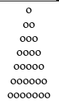
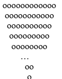

Назад
Homework 6
Завдання на перевірку:
-
Задача 4
Побудувати ялинку
-
Задача 11.1
Вивести на екран усі трицифрові числа, у яких перша цифра є більшою або рівною за суму другої і третьої.
Всі завдання:
-
Задача 0
Вивести на екран A B C D E B C D E F C D E F G D E F G H E F G H I
-
Задача 1
Використовуючи цикли вивести на екран 20 символів «о».
-
Задача 2
Відобразити трикутник за допомогою символів «о»
o
оо
ооо
ооооо
оооооо
ооооооо
-
Задача 2.1
Відобразити трикутник за допомогою символів «о»

-
Задача 3
Відобразити трикутник за допомогою символів «о»

-
Задача 3.1
Відобразити трикутник за допомогою символів «о»

-
Задача 4
Побудувати ялинку
-
Задача 5
Інвестор вклав S тис. грн на 20 років під 20% річних. Визначити за допомогою циклів суму, яку він одержить (без оподаткування).
-
Задача 6
Інвестор вклав S тис. грн на 20 років під 20% річних, податок складає 5% від суми прибутку. Визначити за допомогою циклів суму, яку він одержить.
-
Задача 7
Інвестор вклав S тис. грн на 20 років під 20% річних, а потім на 17 років під 27% річних. Визначити за допомогою циклів суму, яку він одержить.
-
Задача 8
Вивести на екран послідовність символів а о а о а о а о а о … Всього символів 82.
-
Задача 9
Вивести на екран
-
Задача 10
Вивести на екран
-
Задача 11
Вивести на екран усі двоцифрові числа, у яких перша цифра є більшою або рівною за другу.
-
Задача 11.1
Вивести на екран усі трицифрові числа, у яких перша цифра є більшою або рівною за суму другої і третьої.
-
Задача 12
Написати програму виведення на екран кожного символу латинського алфавіту та поруч з кожним з них символу, що передує йому та що слідує за ним.
-
Задача 1
З клавіатури вводитяться числа поки не буде введено 0. Знайти суму чисел.
-
Задача 2
З клавіатури вводитяться числа поки не буде введено 0. Знайти добуток чисел.
Інші...
-
Задача 1
З клавіатури вводяться числа до тих пір, поки послідовність є зростаючою або спадною.